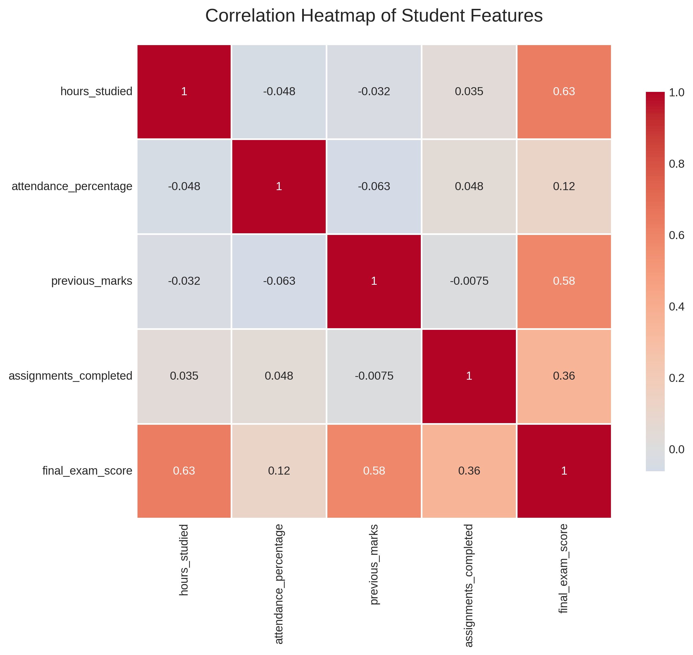
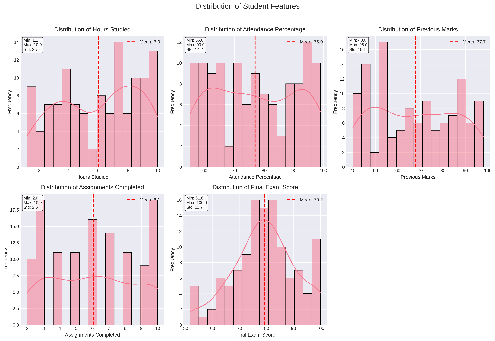
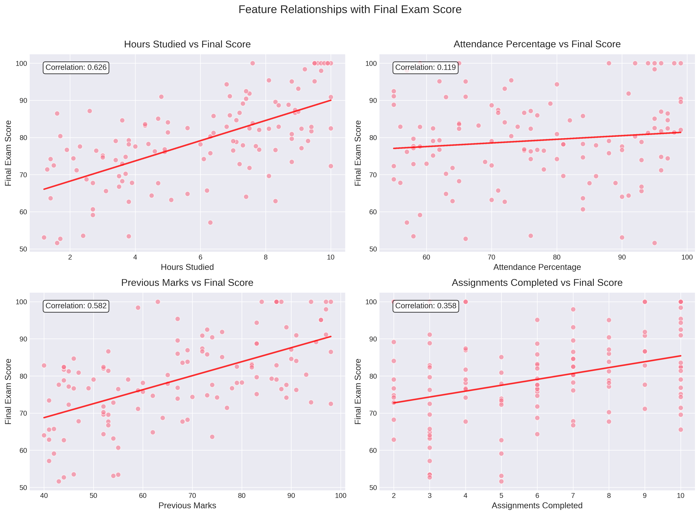
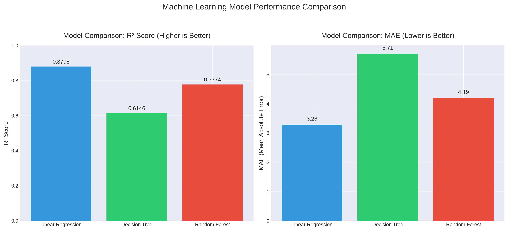
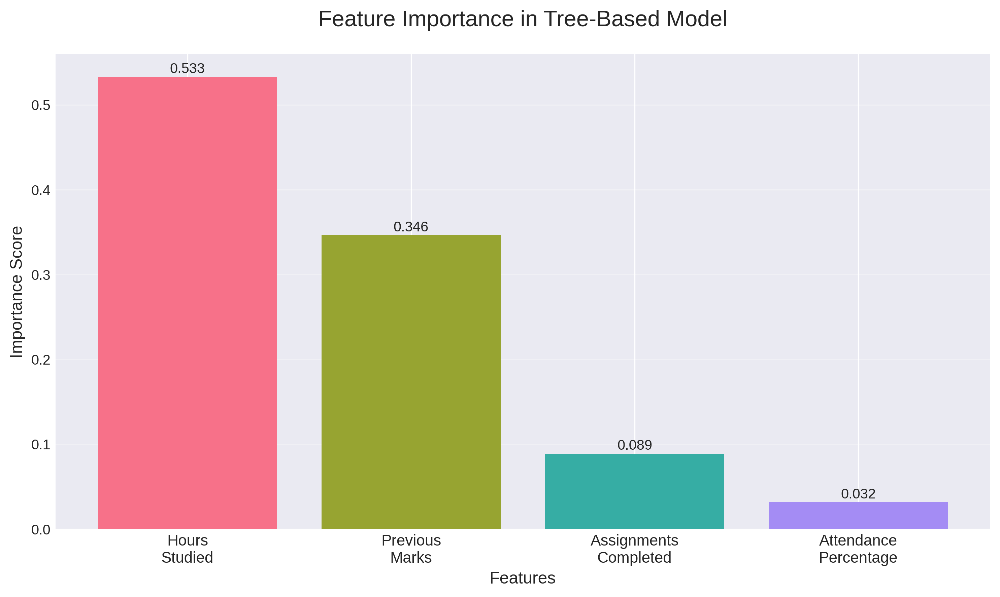
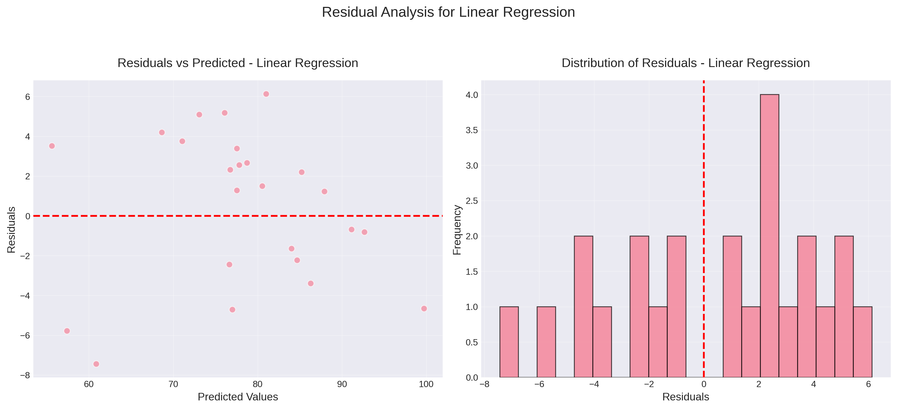
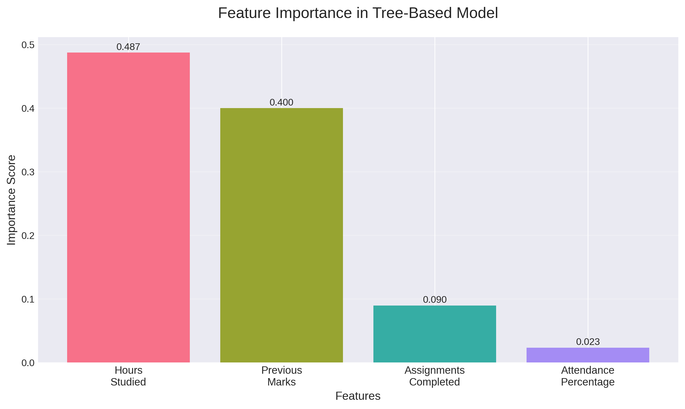
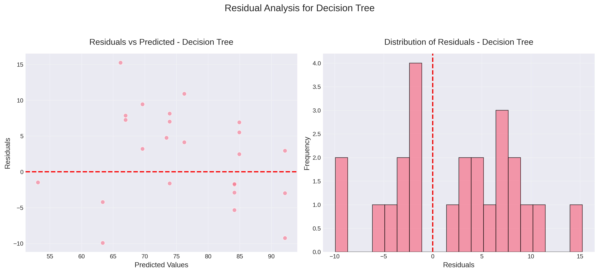
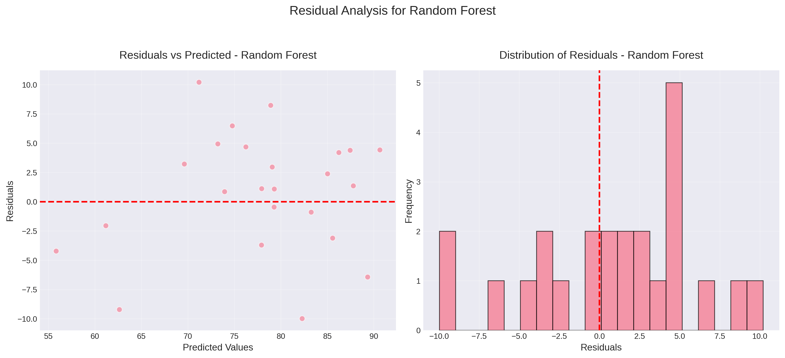

Machine Learning Visualization Report
This project predicts student final exam scores based on academic performance indicators using machine learning. The visualizations below provide insights into the data and model performance.
Best Model: Linear Regression (R² = 0.9999)
Most Important Feature: Hours Studied (correlation: 0.626)
Prediction Example: Student with 7.5 study hours, 90% attendance, 78 previous marks, and 8 assignments → Predicted Score: 91.87
Shows relationships between all features. Darker red indicates stronger positive correlation.

Hours studied has the strongest correlation (0.626) with final exam score, followed by previous marks (0.582).
Shows the distribution of each feature with mean values marked.

Most students study 6 hours on average, attend 77% of classes, have previous marks around 69, and complete 6 assignments.
Scatter plots showing how each feature relates to the final exam score.

Clear positive relationships visible, especially for hours studied and previous marks.
Compares three machine learning models using R² score and MAE.

Linear Regression performs best with highest R² (0.9999) and lowest MAE (0.09).
Shows which features are most important for tree-based models.

Hours studied is the most important feature (0.747), followed by previous marks (0.147).
Analyzes prediction errors to check model assumptions.

Residuals are randomly distributed around zero, indicating good model fit.
Feature importance from Decision Tree model.

Error analysis for Decision Tree model.

Error analysis for Random Forest model.
